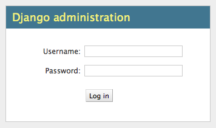
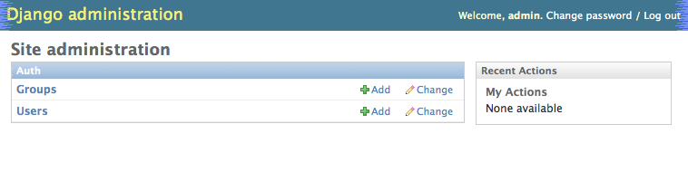

Django comes with:
Pretty much everything you need to make a solid website quickly.
Lots of frameworks offer some of these features, if not all.
What is Django’s killer feature
The Django Admin
The Django Admin works in concert with the Django ORM to provide automatic CRUD functionality. You write the models, it provides the UI.
The Django Admin is a great example of the Pareto Priciple, a.k.a. the 80/20 rule:
80% of the problems can be solved by 20% of the effort
The converse also holds true:
Fixing the last 20% of the problems will take the remaining 80% of the effort.
The Django Admin is, itself, an app, installed by default (as of 1.6).
In earlier versions of Django, you might need to install it. This is accomplished by adding it to the INSTALLED_APPS setting:
INSTALLED_APPS = (
'django.contrib.admin', # <- make sure it's there and uncommented
# ...
)
What we need now is to allow the admin to be seen through a web browser.
To do that, you have to add URLs to your project.
You’ve seen how Flask resolves URLs using “routes”. Django too has a system for dispatching requests to code: the urlconf.
urlpatterns
I said above that a urlconf is an iterable. That iterable is generally built by calling the django.conf.urls.patterns function. It’s best to build it that way, but in reality, any iterable will do.
However, the name you give this iterable is not flexible.
Django builds a list of available urls by loading the urlconf named urlpatterns that it finds in the file named in settings.ROOT_URLCONF.
You can build a urlconf by adding urls one at a time. However many Django add-on apps, like the Django Admin, come with their own urlconf. For apps like this, it is standard to include the urls defind by these apps by rooting them at some path in your site.
You can do this by using the django.conf.urls.include function as the callable in a url call:
# ...
url(r'^forum/', include('random.forum.app.urls')),
# ...
We can use this to add all the URLs provided by the Django admin in one stroke. If you open the urls.py file in a project made by startproject you should find the following lines are already present:
from django.contrib import admin #<- make sure these two are
admin.autodiscover() #<- present and uncommented
urlpatterns = patterns('',
...
url(r'^admin/', include(admin.site.urls)), #<- and this
)
We can now view the admin. We’ll use the Django development server.
In your terminal, use the runserver management command to start the development server:
(djangoenv)$ python manage.py runserver
Validating models...
0 errors found
Django version 1.4.3, using settings 'mysite.settings'
Development server is running at http://127.0.0.1:8000/
Quit the server with CONTROL-C.
Load http://localhost:8000/admin/. You should see this:
You can log in with the name and password you created when you first ran syncdb for your project. If you can’t remember that, you can always use the createsuperuser command to add a new superuser and use that one to log in.
After logging in, you’ll be viewing the Django Admin index. The index page will have a visible section for each installed app that provides one or more Models registered with the admin. Each of these sections will provide a list of models registered. You should see something like this:
Click on Users. Find yourself? Edit yourself, but don’t uncheck superuser.
In order to use the Admin to interact with your models, you must register them. Django expects these registrations to take place in a file called admin.py.
Find that file in your app and add code to register your model(s):
from django.contrib import admin
from your_app.models import SomeModel
admin.site.register(SomeModel)
When a model is registered with the Django Admin, new urls for interacting with it are automatically generated by the Django Admin urlconf. Because we’ve used django.conf.urls.include to add all the admin urls to our project urlconf, there’s no further work needed.
After registering your models, simple reload the admin index page. You should see a section for your app listed, and all your registered models listed in that section.
While the admin is quite nice in terms of what it gives you. It is built to fulfill that Pareto Principle. There are often modifications you need to make in order to get things just right.
For example, consider a blogging app like the one we created in Flask. In such a system, a Post can be categorized. Where the Django Admin displays the UI for this will be dependent on which model holds the ManyToManyRelationship field for that connection.
If you place that field on the Category object then you end up in a situation where you need to add Posts to Categories, rather than the more natural workflow of choosing Categories for Posts.
The key to customizing how a model is administered by the Django Admin is to create a customized sublcass of the django.contrib.admin.ModelAdmin class.
Looking at the admin.py file generated for a Django app, you’ll see a few things of interest.
Most usable admin functions and attributes are provided by the ModelAdmin class.
For example, you can influence the tabular display of fields from your Model class by using the list_display attribute:
- class PostAdmin(admin.ModelAdmin):
- list_display = (‘__unicode__’, ‘created_date’, ‘modified_date’,
- ‘published_date’, ‘author’)
admin.site.register(Post, PostAdmin)
By adding or omitting fields from this tuple, you control what appears on the table listing all existing Post objects in your database.
Pretty simple, eh?
A Couple of things about the list_display option are important to know:
As an example, you could use this callable to provide a link to the admin page for the User who is the author of a post, instead of just the user’s id.
Your functionality might provide:
But where to add this code? The admin.py Module? On your custom ModelAdmin? On the Post Model?
Let’s think about each of our two functionalities.
This would tend to point to providing the first as a method on the Post model, and the second as a model admin callable.
The first might look like this:
class Post(models.Model):
# ...
def author_name(self):
raw_name = "%s %s" % (self.author.first_name,
self.author.last_name)
name = raw_name.strip()
if not name:
name = self.author.username
return name
The second might appear this way in your custom ModelAdmin class in admin.py:
# add an import
from django.core.urlresolvers import reverse
# and a method
class PostAdmin(admin.ModelAdmin):
#...
def author_link(self, post):
url = reverse('admin:auth_user_change', args=(post.id,))
name = post.author_name()
return '<a href="%s">%s</a>' % (url, name)
Notice that the author_link function we just wrote returns HTML. Like any good framework, Django will escape this HTML before displaying it. You’ll also need to let the admin know your HTML is safe:
def author_link(self, post):
#... method body
author_link.allow_tags = True #<- see that bit there?
In Python, everything is an object. Even methods of classes.
The Django admin uses special method attributes to control the methods you create for list_display.
Another special attribute controls the column title used in the list page:
def author_link(self, post):
#... method body
author_link.allow_tags = True
author_link.short_description = "Author" #<- add this
Finally, replace the 'author' name in list_display with 'author_link':
list_display = (..., 'author_link')
Of course, any changes or customizations we make to default Admin behavior should be covered by tests. To test the admin, you first need a new TestClass:
# new imports
from django.contrib.admin.sites import AdminSite
from myapp.admin import PostAdmin
# new TestCase
class PostAdminTestCase(TestCase):
fixtures = ['some_initial_data.json', ]
def setUp(self):
admin = AdminSite()
self.ma = PostAdmin(Post, admin)
for author in User.objects.all():
title = "%s's title" % author.username
post = Post(title=title, author=author)
post.save()
The key is instantiating both an AdminSite and a ModelAdmin to serve in your tests. Once that’s set, you can test methods of that ModelAdmin:
def test_author_link(self):
expected_link_path = '/admin/auth/user/%s'
for post in Post.objects.all():
expected = expected_link_path % post.author.pk
actual = self.ma.author_link(post) # <- Using the admin here
self.assertTrue(expected in actual)
First, replace the 'author' name in list_display with 'author_link':
list_display = (..., 'author_link')
We also need to let the admin know our HTML is safe:
def author_link(self, post):
#... method body
author_link.allow_tags = True
It would also be nice to add Categories to Posts when editing the latter, rather than having to do it the other way around.
But there is no field on the Post model that would show Categories.=
Django provides the concept of an inline form to allow adding objects that are related when there is no field available.
In the Django Admin, these are created using subclasses of the InlineAdmin.
For example, an inline admin to edit Categories in the context of a Post might look like this:
class CategoryInlineAdmin(admin.TabularInline):
model = Category.posts.through
extra = 1
Once that is in place, all you need is one line added to the PostAdmin class definition:
- class PostAdmin(admin.ModelAdmin):
#... other options inlines = [CategoryInlineAdmin, ]
#... methods
The key is to define the inline before the model admin where you will use it so that the class is available when you reference it. Otherwise you’ll get NameErrors.
It’s even possible to remove the ‘posts’ field from the Category object, so that if you are editing a category you can avoid having to see the posts to which it is related:
# create a custom model admin class
class CategoryAdmin(admin.ModelAdmin):
exclude = ('posts', )
# and register Category to use it in the Admin
admin.site.register(Category, CategoryAdmin)
There’s a great deal more to learn about the Django admin. I encourage you to read the documentation and explore ways you can make the admin perform the way you’d like it to.
{kind=link}
{kind=link}